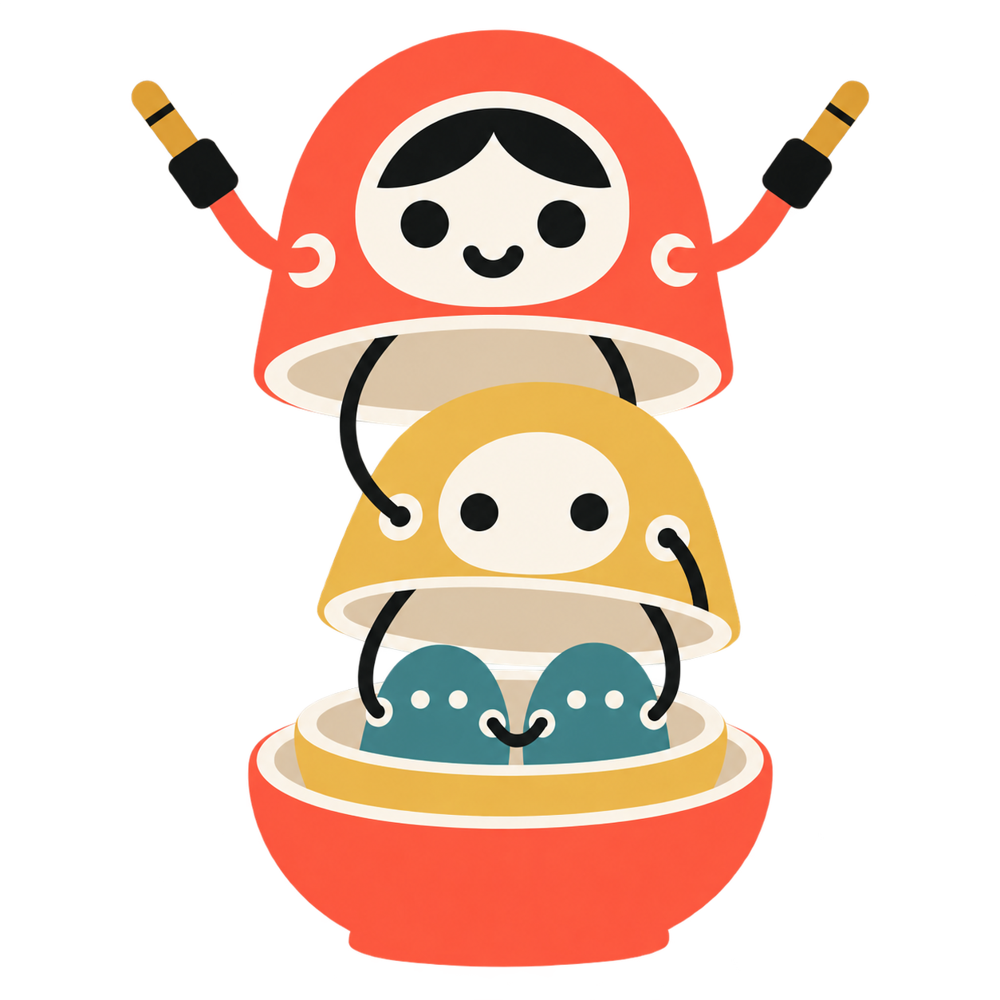

One line or a compact block?
Start with the full-width stack: MATRYOSHKA sets the width, FAT fills the space above it. Compare each study at 175 pixels below.
Two siblings, one connection

Two teal dolls sit inside the yellow parent. The outer jacks connect upward to that parent; the two inward-facing jacks share one short cable.
Detail reduces with size: hair and a smile on the outer doll, a simpler middle face, and just two eye marks on each small teal body. No ivory face discs on the smallest dolls.
Download transparent PNG
The starting point
W06 · Archivo Black · the original numeral inside K.
Study files
The four new wordmarks are SVG outlines with no font dependency at display time. Each uses different Roboto Flex width, weight, and optical-size settings for FAT and MATRYOSHKA.
Exact type settings · Image-generation prompt and brand colors · Roboto Flex source · Font licence